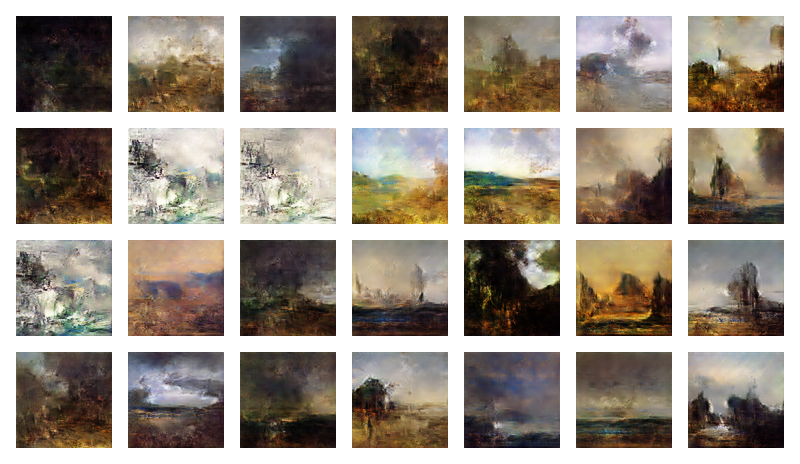
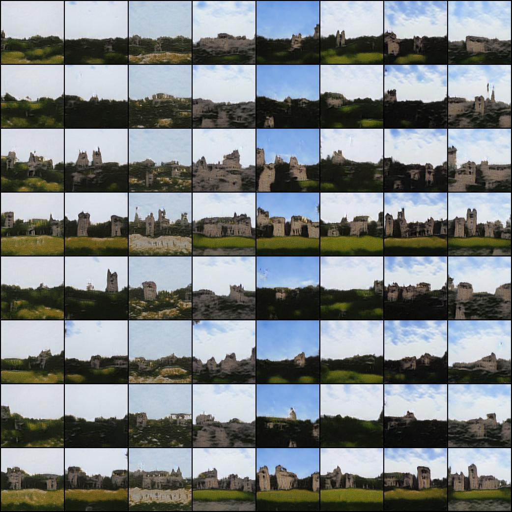
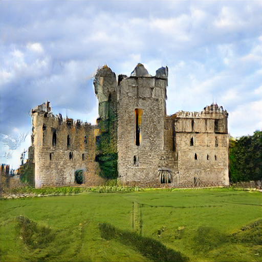

GANs, Castles, and Landscapes
Over this summer, I took an interest in image generation algorithms and started to do some experiments with them. Image generation has captured the attention of many people, including myself, for what I see as a few key reasons. First, truly high-quality synthetic images are almost shocking when you first see them. It’s alarming to realize that you cannot distinguish reality from a complete fabrication built by a model with no underlying understanding of the world it simulates. The reactions of people I showed StyleGAN2 faces from thispersondoesnotexist.com to highlighted this. Second, and more technically, generation appears to be a much harder problem than classification or regression. Accurately representing a data distribution (as with VAEs) or generating new samples from a distribution (as with GANs) is difficult and computationally expensive to do well on rich, complex datasets. We will see just how computationally expensive later. Third, image generation touches at what we might call machine creativity, a deep and fascinating concept.
I trained two different GANs, a basic DC-GAN and a StyleGAN2 model, on a collection of castle images I scraped from Google’s OpenImage dataset. Manual inspection confirmed that some images were either very low quality or not a castle at all, so I had to do some manual pruning. I ended up with about 6,000 castle images for training.
I first tried DC-GAN[1,2] (Deep Convolutional GAN). This is a fairly simple GAN approach without any fancy attention, augmentation, or other tricks for improved performance. Both the generator and discriminator have four convolutional layers with leakyReLU activation functions. The generator is fed a seed of 100 numbers, and through upsampling in its convolutional layers, transforms that into a square image output (in this case 96x96 pixels). Here’s a visualization of the model over 500 epochs of training.


We can see that the model clearly learned something. Images generally feature a semantically correct placement of grass, building-like objects, and sky. We can see a number of towers and an understanding that most castles appear somewhere between grey and brown. There is also not that much mode collapse - there is still a good variety of representations, with the exception of the abstract green-gray images. However, there are a lot of issues with these images. Many images have white patches in nonsensical locations, and the castle architecture is often amorphous or physically impossible. Some images don’t have any recognizable objects in them. During training, I noticed clear gradient vanishing. The discriminator would improve much faster than the generator, leading to discriminator loss tending toward zero while the generator loss increased with every epoch. Fortunately, this problem was not extreme, and I could probably have reduced it greatly with hyperparameter tuning.
I also trained the same DC-GAN model on a collection of landscape art, which produced decent results, and pictures of sushi, which did not.

StyleGAN
After my experiments with a standard GAN, I was eager to work with a model closer to the state of the art. Fortunately, NVIDIA’s StyleGAN2[3] model is available to the public for custom training. I have to thank Phil Wang for his very easy-to-use pytorch implementation. The first noticeable difference with StyleGAN2 is how long it takes to train. All these top models are trained on many GPUs in parallel, which I cannot replicate. I used the free version of Google Colab, and although this is a great service for those without a GPU, the training speed on sophisticated models can be painful. Fully training a StyleGAN2 model on a single machine would take around 60 hours if I was lucky enough to connect to one of the better GPUs. Because free users are limited to 12-hour bursts of training, I didn’t fully train a StyleGAN2 model. In fact, I didn’t even get close. But even after 36 epochs, the results were quite promising. We can see good variety and realism in model outputs. The figure below also shows off StyleGAN2’s cool style transfer feature. The images in the far-left column are being transformed according to the ‘style’ of the images at the top of each row. We can see how this latent style captures both features like color palette and building density.
So how do my trained models compare to the state-of-the-art?


bigGAN
This is a synthetic castle image from the 512x512 bigGAN[4] model, which sits besides StyleGAN as the top algorithm on a number of image generation metrics. This image clearly shows a castle, although it is not without its faults, particularly in the border between castle and sky and in the foreground grass. bigGAN offers class-conditional image generation (in this case conditioned on castle), and I noticed obvious mode collapse for castle outputs. Any seed for a castle image produced basically the same output, suggesting memorization of the training data. However, this is understandable, as bigGAN trained on a huge image dataset where I imagine very few images contained castles. Fully custom training either bigGAN or StyleGAN on my castle dataset would undoubtedly produce improved results at this specific task.


Additionally, I did some latent space interpolation with bigGAN and found some interesting results. We can see intermediate classes of images appearing in the latent space between two other classes - houses appearing in between valley and coral reef, and lighthouses and umbrellas appearing between geysers and coral reefs. This gives us a peek into the way the model represents classes and their relationship to each other, similar to how we can use latent space embedding in NLP models to learn about the structure of languages.
One particular limitation with GANs comes from their computational expense. I’m just an undergraduate student, and I don’t have my own computer with a high-end GPU for training. Running Google Colab all day is simply not desirable. More generally, the computational and energy cost of training large deep models through backpropagation is extreme. Neural networks are in a certain sense a brute force approach to problem solving, but perhaps they are the best we can do.